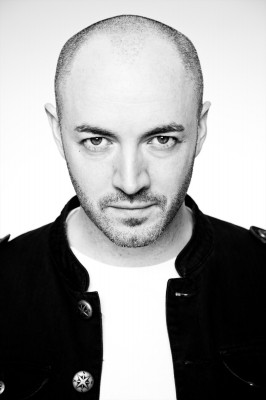
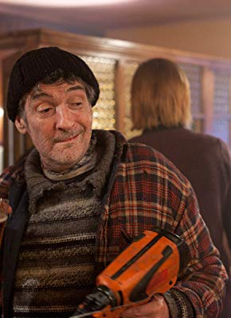

#4137 Cherrybomb

 IMDB-Wertung: 6.0 / 10
IMDB-Wertung: 6.0 / 10  Metascore: 0
Metascore: 0 
Malachy, der Sohn vom reichen Taxiunternehmer, und Luke, der Sohn vom Penner mit Gangsterschulden, sind trotz unterschiedlicher Herkunft und Lebensbedingungen die dicksten Kumpels. Nun aber stellt eine neue Herausforderung ihre Freundschaft auf die Probe: Michelle, süße sechzehn und Tochter des promiskuitiven Badeparkdirektors, Malachys momentanem Arbeitgeber. Im Nu entsteht ein Wettstreit, wer als erster bei Michelle zum Zuge kommt. Und weil Michelle auf tollkühne Rebellen steht, spitzt sich die Angelegenheit bald dramatisch zu.
Jahr: 2009
Dauer: 85 Minuten
FSK:
Land: England Studio: Capelight PicturesTonspuren: DTS - ,
Untertitel: Deutsch,
Auflösung: 1080p (1920x816) Größe: 8007 MB
Genre: Thriller, Drama
Regisseur: Lisa Barros D'Sa, Glenn Leyburn
Drehbuch: Alice Winocour
Soundtrack:
Darsteller:
 Rupert Grint als Malachy
Rupert Grint als Malachy Robert Sheehan als Luke
Robert Sheehan als Luke James Nesbitt als Crilly
James Nesbitt als Crilly-  Paul Kennedy als Chris
- Conor MacNeill als Fanta
- Greer Ellison als Bun
- Kimberley Nixon als Michelle
- Paul Garrett als Bob
- Niamh Quinn als Donna
- Kat Kirk als Sharon
- Kathy Kiera Clarke als Emma
-  Lalor Roddy als Smiley
- Paul Caddell als Swimming Instructor
- Richard Orr als Uncle Joe
- Bronach Lawlor als Jessica
- Maggie Hayes als Aunt Maggie
Datei: X:\2009(A-F)\Cherrybomb (2009, FSK, 1920x816).mkv seit 26.07.2016
Festplatte: HD 2008(G-Z)-2009(A-F)
 Es gibt insgesamt 91 Filme in der Gruppe '2009(A-F)'
Es gibt insgesamt 91 Filme in der Gruppe '2009(A-F)'